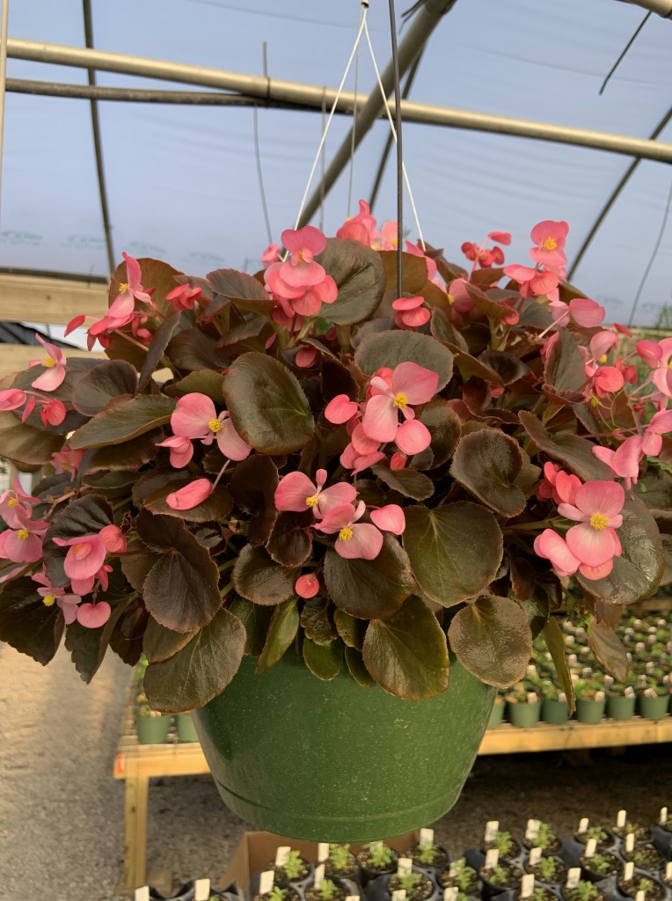
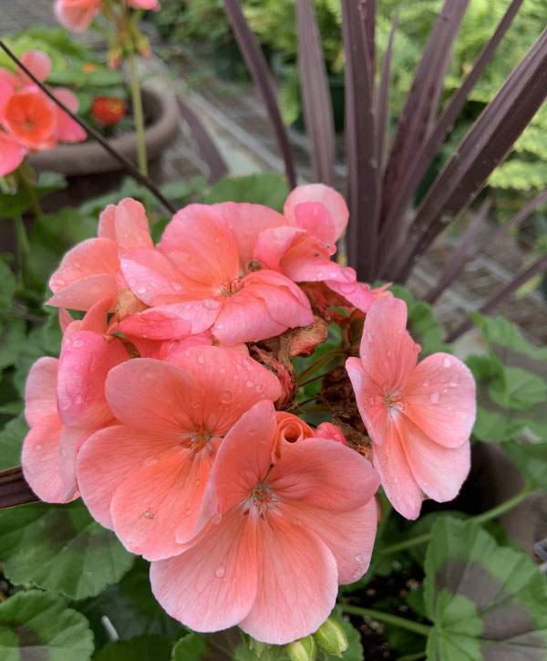
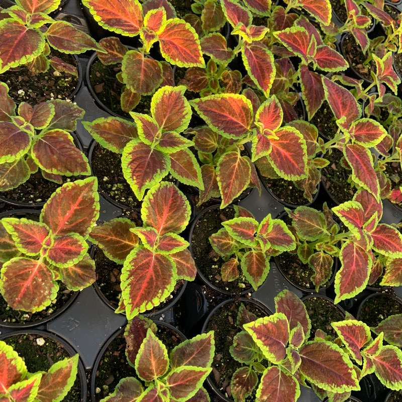

Nursery trees & shrubs
Woody ornamental trees and shrubs well suited to the blazing hot Chattanooga summers, yet hardy for our occasional cold snaps.
NurseryHixson, Tennessee · Established 1976
Green Thumb Nursery is a retail nursery on Hixson Pike with a large selection of quality plants grown right here at the nursery or in our greenhouses, plus expert advice for all of your horticultural needs.


Our expertise
Our 40 years of experience lets us offer unparalleled advice, consultative services, horticultural expertise and innovative design services, so you can bring that same expertise to your own lawn or garden.
We offer plants that are hardy to our local climate: worry-free, low-maintenance plants that add beauty to your landscape year after year. Our goal is the finest quality and largest selection of local plants in the Chattanooga area, with the best prices and a friendly, knowledgeable staff. One-stop shopping!
“Most of our greenhouse inventory starts as seeds or cuttings, and we grow the plants to a mature size so they are ready to ignite your landscape.”
What we grow
Shade or sun, perennial or annual, vegetable or flower: our selection is made for Chattanooga summers and the occasional cold snap.
Woody ornamental trees and shrubs well suited to the blazing hot Chattanooga summers, yet hardy for our occasional cold snaps.
Nursery
Our greenhouses are constantly teeming with a wide selection of summer annuals: locally grown plants with bright, striking color that stays vibrant all season.
Greenhouse
Shop our containers, pick a pre-potted one, or bring your own pots to Beth Painter for her special container design service.
ContainersLawn & landscape
Sod, bulk mulch, pine straw, wheat straw, grass seed and the Fertilome family of products, with staff who explain when, where and how to use them.
Fescue, Bermuda and Zoysia by the piece or the pallet, typically March through November. Pieces fit in the trunk of a car, and delivery is available.
Bagged pine, cypress or hardwood mulch, shredded hardwood in bulk by the heaping scoop, and long-needle pine straw by the bale.
Fertilome, Hy-Yield and Natural Guard to feed, treat pests or fungus and control weeds, plus advice from a staff with over 40 years of experience.
A year on the lawn
A beautiful lawn is just a few easy steps away. Ask us which product fits your grass and your yard.
Before crabgrass germinates, to stop seed sprouting and feed the spring green-up.
On a damp lawn with no rain for a couple of days, when it controls the most weeds.
Controls crabgrass through June, July and August with a slow, steady summer feeding.
The time to reseed thin or bare spots, or start a new lawn, and rebuild heat-stressed roots.
Winter protection for quick green-up next spring; also a fall feeding for roses, perennials, trees and shrubs.
On the benches
Kind words
Green Thumb Nursery has been my family’s go-to for landscaping plants, annual flowers, and Christmas trees for over 20 years. Ray and Beth give all of their customers the warmest welcome, and are extremely knowledgeable and helpful about plants and landscaping design. When planning our landscaping for our first home, we showed them a picture of our house, and they drew out a design and suggested plants that would work well together in each space.– Olivia Schoolfield
The best selection of annual and perennial plants and flowers. Staff is very knowledgeable and happy to help you design, plan, or give advice. They also have the BEST Christmas trees and still flock live trees!– Mary Jungels
My whole yard is a Green Thumb landscaped! For 15 years at this house my neighbors always stop and comment how beautiful my yard is. Every plant, shrub and the zoysia came from them!– Vickie Hurley
I really like the friendly, personalized, knowledgeable service I always receive. Plus, they have a great selection to choose from!– Jim Myhan
It’s always a pleasure to shop at Green Thumb. They are friendly and very knowledgeable. We will be back in a few days to purchase our Christmas tree.– Teresa Strange Curti
Reviews as published on the Green Thumb Nursery website, lightly shortened.
Good to know
Anything else? Call us at (423) 842-3892. We are here to help with any questions you have.
Yes. Most of our greenhouse inventory starts as seeds or cuttings that we grow to a mature size here. The few plants we source come from producers nearby, so they are already adapted to our climate.
Fescue, Bermuda (Tifway 419) and Zoysia, by the piece or by the pallet. Sod deliveries to the nursery typically run from March through November, and we can special order at other times of the year.
Yes. You can shop our containers, choose a pre-potted container, or bring your own pots to Beth Painter for her container design service. We can adapt a design to your style and sun or shade, or do all of it for you.
Yes. Sod can be delivered by the piece or by the pallet, and delivery is available whenever larger quantities of mulch are needed. Call us for details.
Shredded hardwood mulch is sold in bulk by the scoop, loaded into your truck or trailer. Bagged pine, cypress and hardwood mulch and long-needle pine straw by the bale are also available.
Visit the nursery
Send a note and it opens as an email to the nursery.